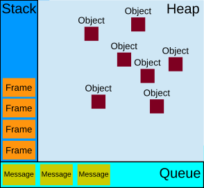

<!doctype html>
<html class="theme-5">
<meta charset="utf-8" />
<link href="../html-slideshow.bundle.min.css" rel="stylesheet" />
<link href="../style.css" rel="stylesheet" />
<script src="https://dbwebb.se/cdn/js/html-slideshow_v1.1.0.bundle.min.js"></script>

<title>JavaScript - The Event Loop</title>

<script data-role="slide" type="text/html" data-markdown class="titlepage center">
# JavaScript
## The Event Loop
### Mikael Roos
</script>


<script data-role="slide" type="text/html" data-markdown>
# Agenda

* Stack, Heap, Queue
* Event loop

</script>


<script data-role="slide" type="text/html" data-markdown class="titlepage center">
# The event loop
## Understand how it works
</script>


<script data-role="slide" data-markdown type="text/html" class="center">
# Visual representation
<figure>
    
    <figcaption>Stack, queue and heap.</figcaption>
</figure>
</script>


<script data-role="slide" type="text/html" data-markdown>
# Heap

* Memory area where to store functions and objects throughout their life span
* Store runtime objects where size is known ar runtime

</script>


<script data-role="slide" type="text/html" data-markdown>
# Stack

* Storage for data where size is known at compile time
    * const values
* Save references to the heap
* When function call is made, it is stored on the stack as a "frame"

</script>


<script data-role="slide" type="text/html" data-markdown>
# Stack frame

* Each function call add a frame to the stack
* Frame contains references to
  * arguments sent to the function
  * local variables in the function
* The stack frame is removed from the stack when the function returns

</script>


<script data-role="slide" type="text/html" data-markdown>
# Stack push/pop

* Function calls add frames to the stack

```
function foo(b) {
  const a = 10;
  return a + b + 11;    // Pop frame 2
}

function bar(x) {
  const y = 3;
  return foo(x * y);    // Push frame 2, pop frame 1
}

// assigns 42 to baz
const baz = bar(7);     // Push frame 1 
```

</script>


<script data-role="slide" type="text/html" data-markdown>
# Queue

* A message queue
* Messages to be processed
* Runtime handles messages and deals with them, oldest first

</script>


<script data-role="slide" type="text/html" data-markdown>
# Queue message

1. Each message has an associated function to be called (to deal with the message)
1. The message is included as an argument in the function call
1. Do all work until the function returns
    * Processing continues until the stack is empty
1. Process the next message in the Queue

</script>


<script data-role="slide" type="text/html" data-markdown>
# Event loop

* Process all message in the Queue
* If the queue is empty, wait until next message arrives

```
while (queue.waitForMessage()) {
    queue.processNextMessage();
}
```

</script>


<script data-role="slide" type="text/html" data-markdown>
# Run-to-completion

* Each message is processed fully before any other message is processed
* You can be sure on that your code runs to completion
* Downside if you code runs to long and blocks, for example the UI
* Dialog "script is taking too long to run"

</script>


<script data-role="slide" type="text/html" data-markdown>
# Adding messages

* Each event adds a message to the Queue
    * (if there is an eventlistener attached to the event)

</script>


<script data-role="slide" type="text/html" data-markdown>
# setTimeout

* Add message to the queue on a regular interval

```
function timeAsSeconds() {
    return new Date().getTime() / 1000
}

const seconds = timeAsSeconds()

// A timeout to be called after 500 ms
setTimeout(() => {
    let when = timeAsSeconds() - seconds
    console.log(`Ran after ${when} seconds`);
}, 500)
```

```
Timer: Ran after 0.5060000419616699 seconds
```

</script>


<script data-role="slide" type="text/html" data-markdown>
# setTimeout...

* Now add some "blocking code" preventing the time message from being processed

```
// Blocking code
while (true) {
  if (timeAsSeconds() - seconds >= 2) {
    console.log("Good, looped for 2 seconds");
    break;
  }
}
```

```
Blocking: Good, looped for 2 seconds
Timer: Ran after 2.000999927520752 seconds
```

</script>


<script data-role="slide" type="text/html" data-markdown>
# Non blocking

* Handling I/O is done using events and callbacks
* Can still carry out UI responsivness while waiting

</script>


<script data-role="slide" type="text/html" data-markdown>
# Summary

* Stack, Heap, Queue
* Event loop

* All messages processed by 'oldest first'
* Setting a timer to a low value does not make it prioritized

* Each message in the queue is processed until it returns

* Avoid blocking code and long running functions

</script>


<script data-role="slide" type="text/html" data-markdown class="titlepage center">
# The end
</script>


<script data-role="slide" type="text/html" data-markdown>
</script>

</html>
